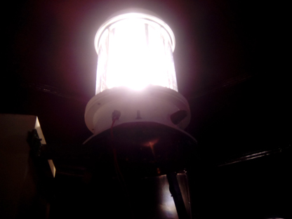
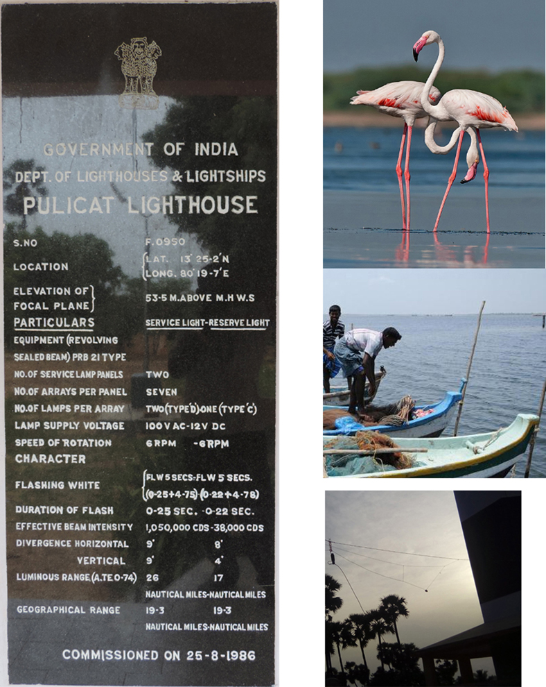

Rajesh Kannan KC2KBY/VU3RGK
 |
Links Home Station Equipments LOG Photos/Videos
We had delays due to weather, and arrive very late for the activity. So we could not do a good job in setting up antennas and station at Pulicat this year. We also had no internet connectivity from the location and problems with the laptop we carried. We just managed few contacts and relaxed rest of the time.
 International Lighthouse Lightship Weekend (15, 16 Aug 2015)
|
AN ANNUAL AMATEUR RADIO
WEEKEND EVENT. On the 15th and 16th of August 2015, we 4 ham radio operators (Rajesh Kannan KC2KBY/VU3RGK, Arun Kumar VU3BBD, Narayanan S VU3GJP and SWL Krishnamoorthy will be operating VU6P SPECIAL HAM RADIO STATION from Pulicat LIght House near Chennai. The basic objective of the event is to promote public awareness of lighthouses and lightships and their need for preservation and restoration, and at the same time to promote amateur radio and to foster International goodwill. Lighthouses are fast becoming an endagered species with the introduction of Global Positioning Systems and Satellite Navigation and the automation of the light source to solar power which has resulted in the withdrawal of mangement personnel (Keepers). It is hoped that this event will highlight this situation and help prevent further desecration of these magnificent structures all around the world. For More Information, Visit http://www.illw.net/ |
|
Location of Pulicat Lake and Lighthouse
|  | ||
| Pulicat (Pazhaverkadu) is a historic seashore town in "north of Chennai" in Thiruvallur District, of Tamil Nadu state, South India. It is about 60 km north of Chennai |
Your comments to
vu3rgk@vu3rgk.com
Home Station Equipments LOG Photos/Videos
|
|
Try Morseit ringtone software for Android
Devices Click here for more details. Available in Google Play Store https://play.google.com/store/apps/details?id=com.vu3rgk.Morseit |
Visitor Count